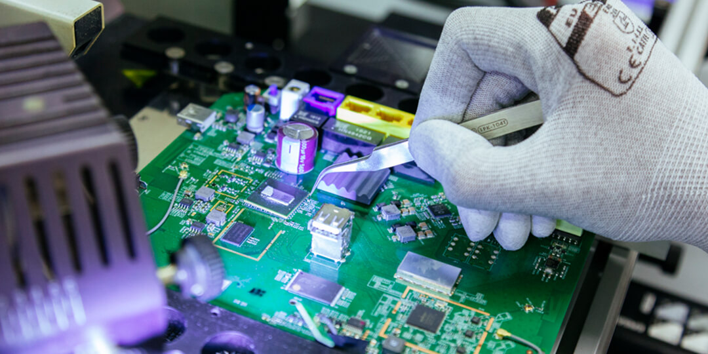

ANOVO care es el resultado de la vocación por ofrecer un trato cercano y personalizado a nuestros clientes finales, con la confianza y el respaldo que otorga ser un servicio técnico homologado por los principales fabricantes y que trabaja para los principales operadores de telefonía, retailers y aseguradoras.
El objetivo de ANOVO care es ofrecer a nuestros clientes el mejor servicio de reparación de móviles y otros dispositivos electrónicos. Para ello contamos con técnicos altamente cualificados, capaces de reparar todo tipo de smartphones y averías, y que cuentan con el apoyo de un gran equipo humano con más de 20 de años de experiencia y de una compañía líder de mercado en servicio postventa y gestión de cadena de suministro en el sector de la tecnología.
En nuestros centros ANOVO care se repara en el acto siempre que sea posible, tanto smartphones en garantía como fuera, y, como somos un servicio técnico oficial y siempre utilizamos piezas originales, nuestros clientes conservan la garantía del fabricante tras la reparación.
|  |